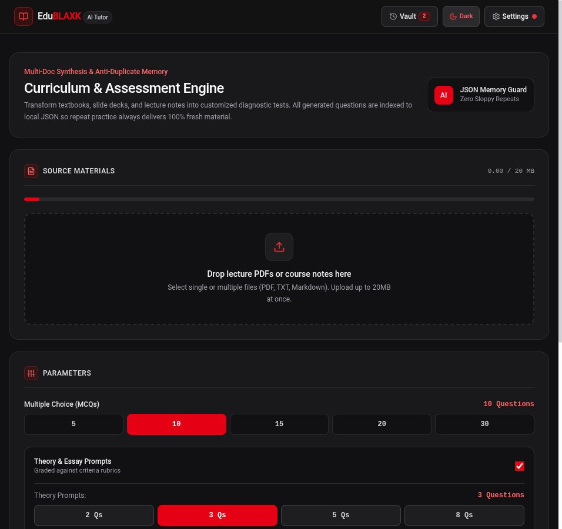
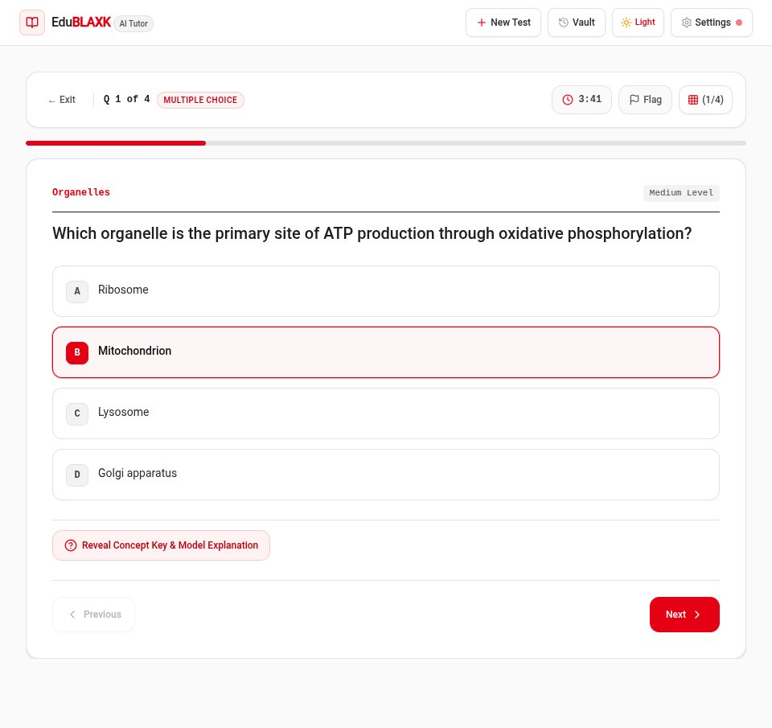
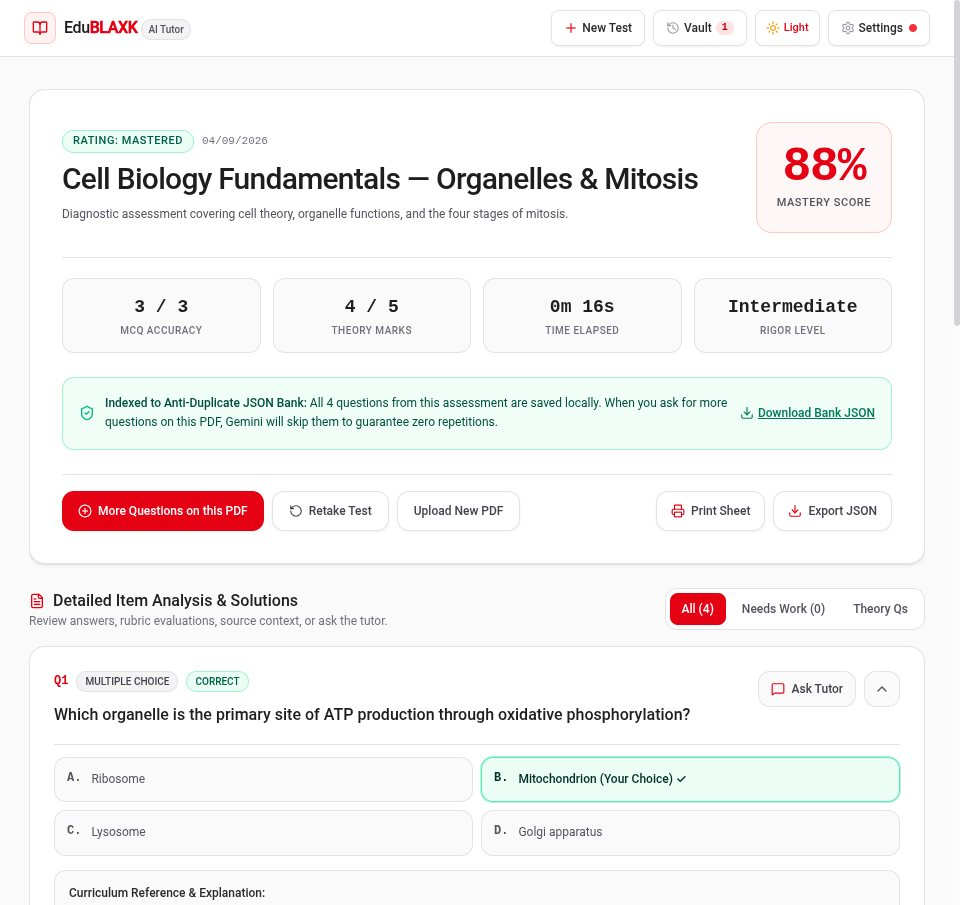
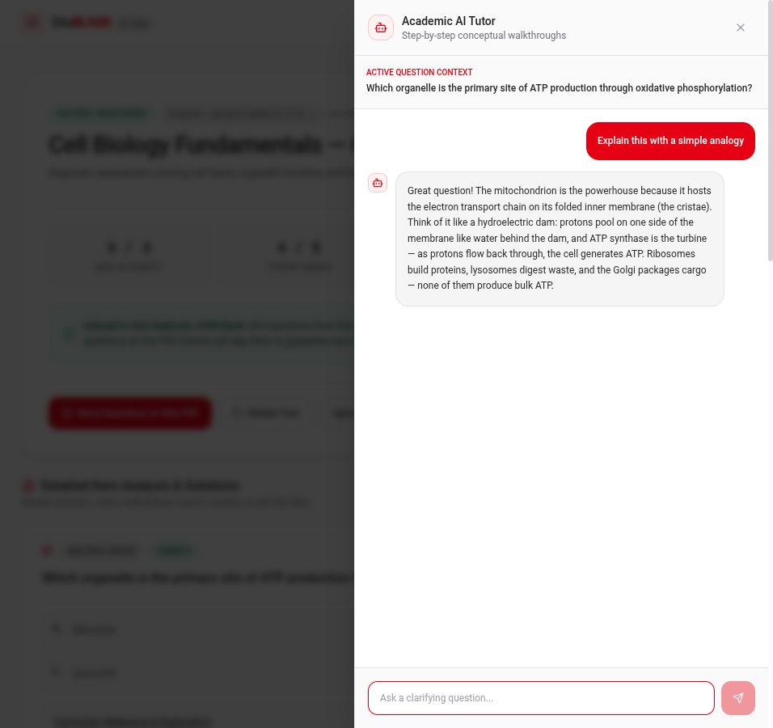
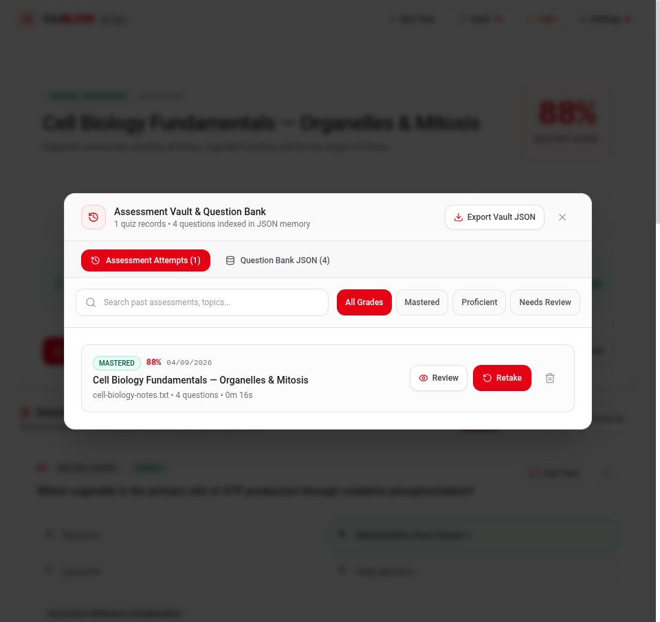
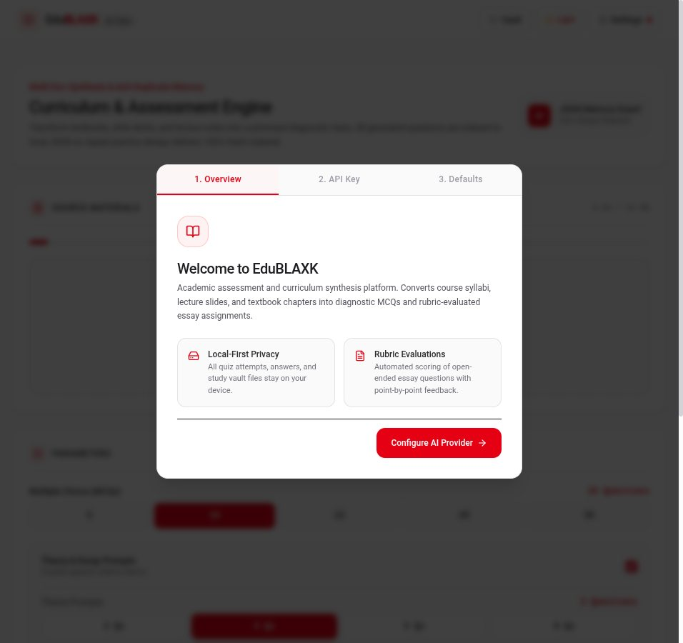

- Status
- prototype
- Language
- TypeScript
- Repository
- Blaxk-C137/EduBlaxk ↗
- Last push
- 2026-09-22
- Source size
- 51 files · 1308 KB
- Licence
- no licence file
The brief
Problem
A student revising from a ninety-slide deck has no way to find out what they do not know. Public question banks do not follow the lecturer's notation, and repeated practice on the same document serves the same questions again — so the second attempt measures memory of the questions, not understanding of the material.
Who it is for
A university student revising alone on a laptop, with a lecture PDF and no internet budget to spare.
Approach
An Express server holds AI provider keys and makes schema-validated structured calls. Documents are extracted locally; every attempt, answer and generated question is stored in the browser. Regeneration is filtered against a local index of previously generated questions.
Personal contribution
Sole author. The repository contains the full application: document extraction, the AI router with tier-safe fallback, the item bank, the quiz engine, the rubric grader and the tutor drawer.
Decisions that mattered
These are the choices that shaped the code — the ones worth explaining, rather than a feature list.
Keys never enter the browser
The client asks the server which providers are configured; it never asks for the key. The catalogue endpoint returns model metadata and a boolean per provider, which is why the settings screen can show pricing honestly without a secret ever crossing into front-end code.
Structured output is validated before it can render
Question and evaluation payloads are validated against a schema. A malformed model response fails loudly instead of silently producing an empty quiz — the failure mode a student would otherwise blame on themselves.
A rate-limited model falls to a cheaper one, never a dearer one
The fallback chain only moves down in price. An overloaded free-tier model cannot quietly upgrade the student onto a paid model mid-assessment.
'Always fresh questions' is enforced locally, not promised
The anti-duplicate bank is local JSON, so the student can inspect it. The claim is verifiable on their own machine rather than a server-side assertion.
Limitations, stated plainly
- The browser is the database. Clearing site data clears history — a deliberate local-first trade-off, not an oversight.
- Multi-provider support costs interface complexity: the settings screen has to explain model pricing and free-tier limits.
- It runs from the repository rather than from a hosted URL.
What this is not: there is no public deployment for this project, so it should not be described as live, available, in production, or used by anyone. Claims about scale or reliability would require measurements that do not exist.
Screenshots from the repository
These are the images committed to the public repository — not marketing renders and not re-creations. Each one is captioned with what it shows and links back to the source.






Source chamber
An excerpt recorded by repository, commit, path and line range — so this page can be checked against the code it describes at any time. Selectable text, never executed.
22 23function providerKeyStatus(): Record<ProviderId, boolean> {24 const keys = loadKeys();25 return {26 google: Boolean(keys.providers.google),27 anthropic: Boolean(keys.providers.anthropic),28 openai: Boolean(keys.providers.openai),29 };30}31 32function modelFromHeader(req: express.Request): string | undefined {33 const raw = req.headers["x-model"];34 return typeof raw === "string" && raw.trim() ? raw.trim() : undefined;35}36 37function aiErrorResponse(res: express.Response, err: unknown) {38 if (err instanceof AiRouterError) {39 const status = err.kind === "auth" ? 400 : err.kind === "rate_limit" ? 429 : err.kind === "overloaded" ? 503 : 500;40 res.status(status).json({ error: err.message, kind: err.kind, retryAfterMinutes: err.retryAfterMinutes });41 return;42 }43 console.error("[EduBLAXK] AI error:", err);44 res.status(500).json({ error: (err as any)?.message || "AI request failed." });45}46 47// API: Health check48app.get("/api/health", (_req, res) => {49 const keys = loadKeys();50 res.json({51 status: "ok",52 activeModel: keys.activeModel,53 providers: providerKeyStatus(),54 timestamp: new Date().toISOString(),55 });56});57 58// API: Model catalog (public info only — no keys)59app.get("/api/models", (_req, res) => {
The trust boundary, in full. Fifteen lines that decide the whole security posture: the server reports which providers are usable and returns model metadata, while the key travels inward exactly once, on POST /api/keys, and is validated before it is stored.
What it taught
Grading theory with a model is easy to demo and hard to trust. The work that mattered was the rubric: forcing explicit criteria into the evaluation call, and surfacing which criteria were missed rather than only a score.